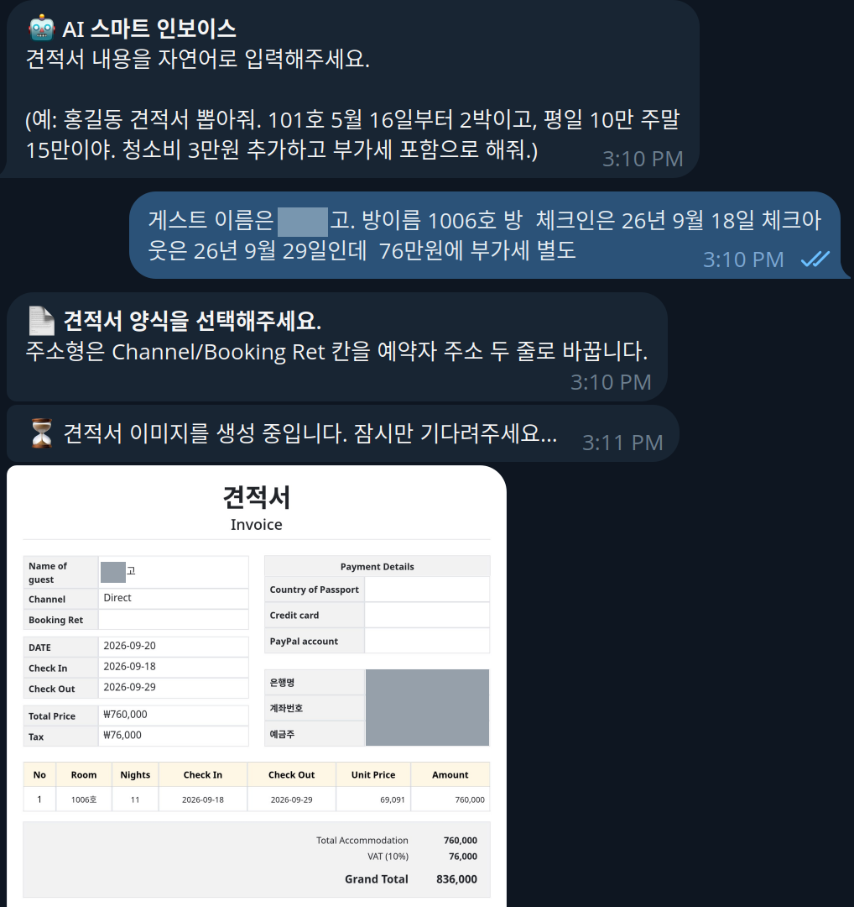
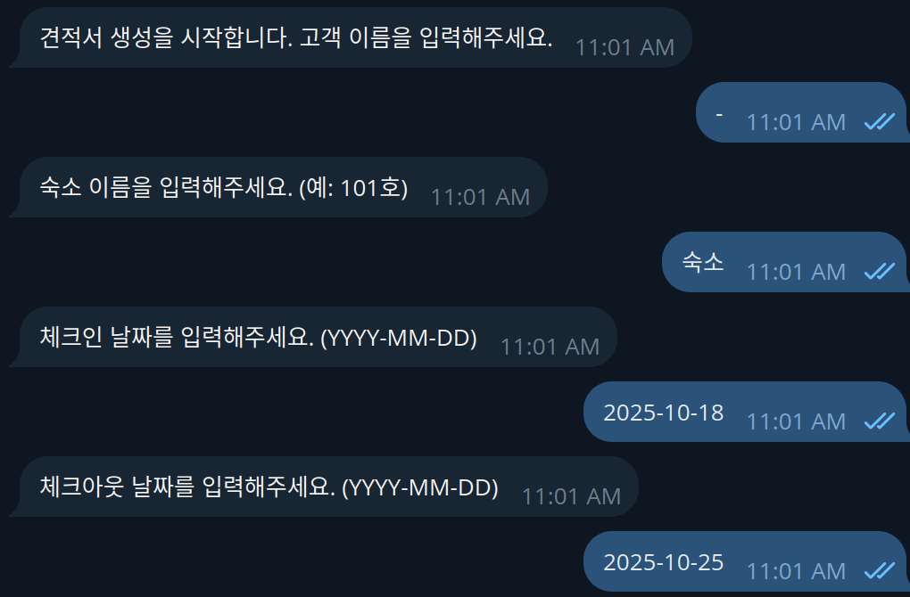
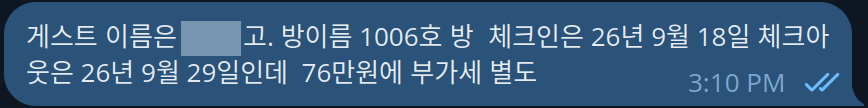
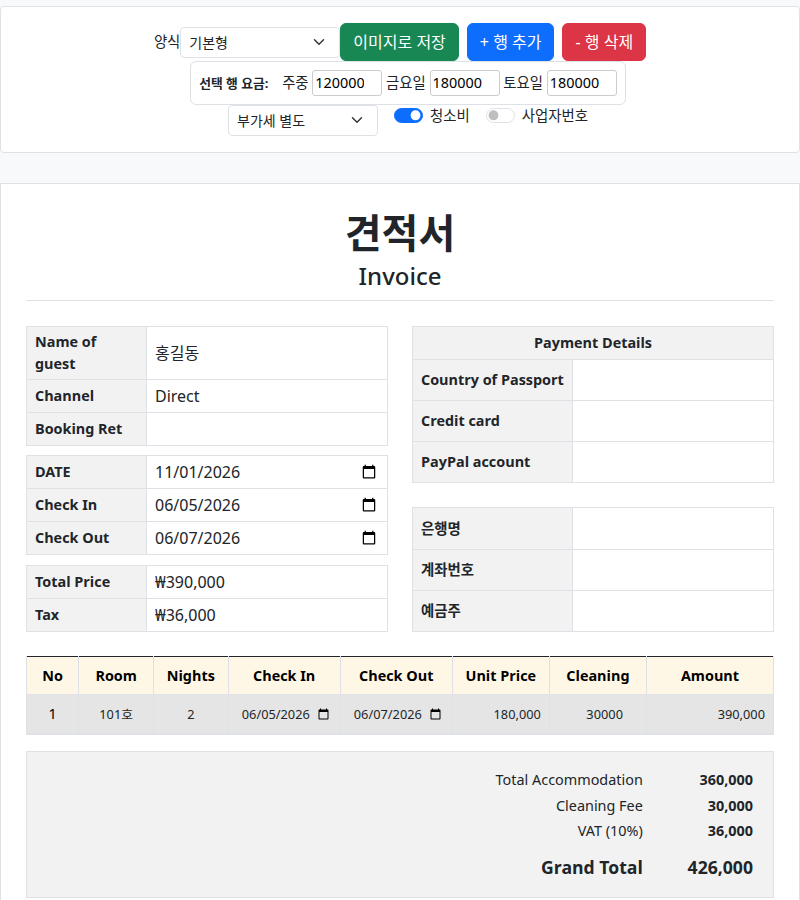

Invoice Simplifier
자연어 요청을 견적서로 바꿔 운영자가 메신저만으로 직접 발행하는 업무 자동화
- 역할
- 요구 정리부터 개발, 운영, 장애 대응까지 혼자
- 기간
- 2025.08 ~ 현재, 실사용 중
- 결과
- 2026.09~10 견적서 75건 모두 문장 입력으로 발행
개요
PC를 쓰지 않는 가족 숙박업 운영자가 메신저만으로 견적서를 직접 발행하도록 전환. 메신저 봇과 업무 프로그램 6종을 개발해 운영 중
- 입력
- 손님, 객실, 날짜, 총액, 부가세를 평소 말투 그대로 한 문장으로 입력
- 해석
- "11박 76만원"처럼 총액만 줘도 그 금액을 고정하고, 1박 단가는 코드가 역산
- 발행
- 확인 요약에서 생성을 누르면 양식 선택을 거쳐 견적서 이미지가 바로 전송

기존 견적 업무의 문제
- 운영자가 직접 견적서를 만들 방법이 없어, 문의가 올 때마다 개발자가 대신 작성
- 운영자는 PC를 쓰지 않음
- 견적이 필요할 때마다 개발자가 퇴근 후 엑셀로 작성해 전달
- 평일, 금요일, 토요일 요금이 달라 계산 실수 위험
LLM과 코드의 역할 나누기
운영자가 결과를 직접 검증하기 어려워, 틀리기 쉬운 지점을 LLM 밖으로 분리
- 계산 분리
- LLM은 객실, 날짜, 단가 같은 원시 값만 구조화 출력으로 추출. 금·토 요금 구분, 부가세, 합계는 같은 계산 모듈이 담당
- 혼동 줄이기
- 손님을 전화번호 뒷자리로 부르는 관행 때문에 객실 번호와 헷갈림. 등록 객실 목록을 프롬프트에 넣고, 목록에 없는 객실이 나오면 경고
- 사람 확인
- 생성 전에 계산 결과를 보여 주고 생성, 가격 수정, 취소 중 선택. 해석에 실패하면 3회까지 다시 입력받고 이후 수동 입력으로 안내
날짜별 요금 요청의 처리
# 운영자 입력
22일 6만, 23일 6만, 24일 8만
# LLM 출력: 날짜와 가격만 나열, 합계와 체크아웃은 비워 둠
# 코드 계산: 합계 200,000, 체크아웃 25일
# 산술과 마지막 날짜 계산은 LLM이 미묘하게 틀리기 쉬워 코드로 분리입력 방식 변경 과정
처음부터 자유 문장을 받은 것이 아니라, 운영자의 피드백을 받을 때마다 입력 방식을 바꿈
| 시기 | 방식 |
|---|---|
| ~ 2025.08 | 엑셀 대리 작성: 퇴근 후 수작업 |
| 2025.10 | 질문형: 항목마다 하나씩 답하고 날짜는 정해진 형식으로 입력 |
| 2026.03 | 한 줄 입력: 방마다 숫자를 순서대로 입력. 단계는 줄었지만 형식을 외워야 하는 문제는 남음 |
| 2026.05 | LLM 견적서: 자유 문장으로 입력하고, 계산은 코드가 담당 |
| 2026.09 | 업무 분리 운영: 업무별 프로그램 6종으로 운영 |


메신저 기반 운영 업무
견적서로 시작해 일일 주차 할인권, 월주차, 객실 계정 관리, 관리비 정산까지 같은 방식으로 확장
- 분리
- 업무 프로그램은 메신저를 모름. 각 업무는 명령줄로 동작하고 결과를 성공·실패 JSON 한 줄로 반환. 설치되지 않은 프로그램의 메뉴는 숨김
- 기록 기준
- 이미지 생성과 이력 저장을 분리하고, 메신저 전송 성공을 확인한 뒤에만 발행으로 기록
- 장애 대응
- 외부 모델이 실패하면 로컬 모델로 전환하고 같은 스키마로 검증. 호출 전에 사용 가능 여부를 확인해 메뉴 노출을 결정
- 멈춰도 계속
- 계산 로직을 견적서 화면에도 넣어, 프로그램이나 서버에 문제가 생겨도 브라우저에서 직접 고쳐 완성
- 알림
- 입력 오류 같은 정상적인 실패는 사용자에게 안내하고, 프로그램 비정상 종료는 개발자에게 알림

결과
- 운영
- 2025.08부터 운영 중. 발행 이력 기반 수정과 재발행, 가격 수정 화면, 메뉴 배치를 계속 조정
- 발행
- 견적서를 모두 문장 입력으로 생성. 보관 중인 최근 기록 기준 2026.09 46건, 2026.10 29건
- 장애
- 최근 두 달 로그의 외부 모델 장애 17회 모두, 10분 안에 견적서 발행이 이어짐
- 실제 오류
- "(번호)고."의 조사까지 손님 이름으로 추출된 사례. 사람이 확인하는 단계를 둔 이유이자, 이름 필드 검증으로 보완할 지점